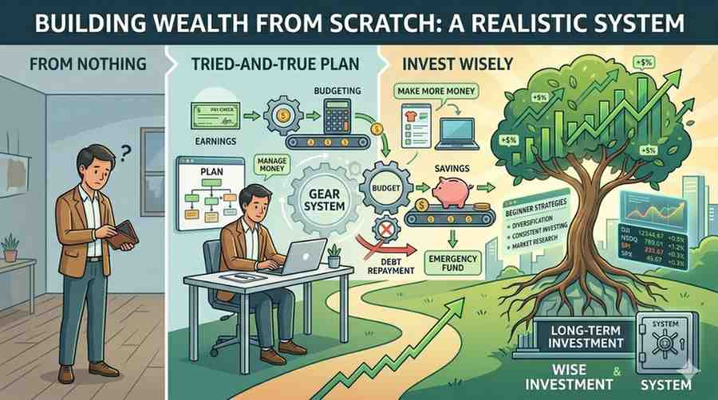

Building Wealth From Scratch: The Proven System Anyone Can Use in 2026

Start with nothing and build real wealth using a simple, proven system. Learn how to earn, save, invest, and grow your money step by step even if you're broke.
📁 investing